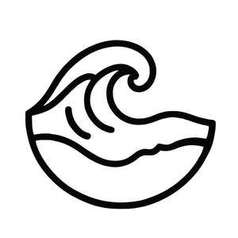

Trade Mark Journal No.2025/037 12 September 2025
UK00004258232 2 September 2025 (25,35)

- Class 25
- Clothing; Knitwear [clothing]; Jackets [clothing]; Ready-to-wear clothing; Woolen clothing; Furs [clothing]; Garments for protecting clothing; Layettes [clothing]; Clothing layettes; Linen clothing; Headbands [clothing]; Headbands for clothing; Gloves [clothing]; Gloves as clothing; Clothes; Aprons [clothing]; Maternity clothing; Kerchiefs [clothing]; Jerseys [clothing]; Denims [clothing]; Shorts [clothing]; Cashmere clothing; Capes (clothing); Gabardines [clothing]; Oilskins [clothing]; Leather clothing; Clothing of leather; Leather (Clothing of -); Collars [clothing]; Silk clothing; Parts of clothing, footwear and headgear; Knitted clothing; Veils [clothing]; Hoods [clothing]; Corsets [clothing, foundation garments]; Windproof clothing; Wristbands [clothing]; Embroidered clothing; Belts [clothing]; Belts for clothing; Bandeaux [clothing]; Waterproof clothing; Rainproof clothing; Casual clothing; Visors [clothing]; Jackets being sports clothing; Stuff jackets [clothing]; Jackets (Stuff -) [clothing]; Clothing for leisure wear; Bottoms [clothing]; Playsuits [clothing]; Ready-made clothing; Latex clothing; Trunks being clothing; Infant clothing; Woven clothing; Drawers [clothing]; Drawers as clothing; Leisure clothing; Clothing for children; Athletic clothing; Ties [clothing]; Clothing for sports; Sports clothing; Muffs [clothing]; Bodies [clothing]; Clothing for babies; Tops [clothing]; Clothing for infants; Clothing for cycling; Weatherproof clothing; Pockets for clothing; Water-resistant clothing; Triathlon clothing; Handwarmers [clothing]; Clothing for skiing; Fabric belts [clothing]; Thermal clothing; Beach clothing; Chaps (clothing); Cowls [clothing]; Men's clothing; Fishing clothing; Dance clothing; Mitts [clothing]; Plush clothing; Clothing for men, women and children; Footwear for men and women; Footwear for women; Underwear for women; Underclothing for women; Footwear for men; Bathing costumes for women; Coats for women; Clothing for cyclists; Women's clothing; Clothing for gymnastics; Clothing for fishermen; Girls' clothing; Corsets [foundation clothing]; Corsets being foundation clothing; Clothes for sports; Sports garments; Coats for men; Bathing suits for men; Clothing for wear in judo practices; Foulards [clothing articles]; Clothing for wear in wrestling games; Articles of clothing; Slipovers [clothing]; Socks for men; Clothes for sport; Smart clothing; Quilted jackets [clothing]; Ladies wear; Baby layettes for clothing; Gussets for underwear [parts of clothing].
- Class 35
- Online retail store services relating to clothing; Online retail store services in relation to clothing; Online retail services for downloadable virtual clothing; Advertising the goods and services of online vendors via a searchable online guide; Online retail store services relating to cosmetic and beauty products; Online advertising; Online marketing; Online retail services in relation to downloadable virtual handbags; Online retail services in relation to downloadable virtual clothing; Online retail services relating to jewelry; Online retail services for downloadable digital music; Online retail services in relation to downloadable virtual footwear; Online advertisements; Online ordering services; Online retail services relating to handbags; Online retail services relating to clothing; Online retail services in relation to downloadable virtual headwear; Providing a searchable online advertising guide featuring the goods and services of online vendors; Online retail services relating to cosmetics; Online retail services relating to toys; Online retail services relating to luggage; Providing a searchable online advertising guide featuring the goods and services of other on-line vendors on the internet; Retail store services in the field of clothing; Online retail services in relation to downloadable virtual works of art; Online advertising services; Online retail services for downloadable and pre-recorded music and movies; Business information services provided online from a computer database or the internet; Online retail services for downloadable ring tones; On-line advertising; Unmanned retail store services relating to drink; Unmanned retail store services relating to food; Online advertising on a computer network; Compilation of online business directories; Online advertising on computer networks; Online ordering services in the field of restaurant take-out and delivery; Providing searchable online advertising guides; Business information services provided on-line from a computer database or the internet; Online business networking services; On-line promotion of computer networks and websites; Arranging commercial transactions, for others, via online shops; Business information services provided online from a global computer network or the internet; Rental of advertising space on-line; Computerized on-line ordering services; On-line advertising on a computer network; Providing online marketplaces for sellers of goods and or services; Online advertising via a computer communications network; Mail order retail services for clothing; Retail services in relation to downloadable virtual handbags; Administration of the business affairs of retail stores; On-line ordering services in the field of restaurant take-out and delivery; Provision of an online marketplace for buyers and sellers of downloadable digital image files authenticated by non-fungible tokens [NFTs]; Mail order retail services for cosmetics; Provision of commercial information from online databases; On-line auctioneering services via the Internet; On-line advertising on computer networks; Online community management services; Retail of third-party pre-paid cards for the purchase of clothing; Online data processing services; Mail order retail services for clothing accessories; Retail of third-party pre-paid cards for the purchase of multimedia content; Providing online commercial directory information services; Provision of an online marketplace for buyers and sellers of goods and services; Promotion, advertising and marketing of on-line websites; Retail services in relation to downloadable virtual clothing.
CEESY LTD